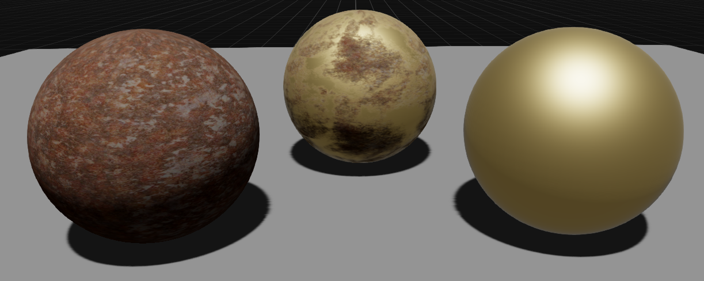
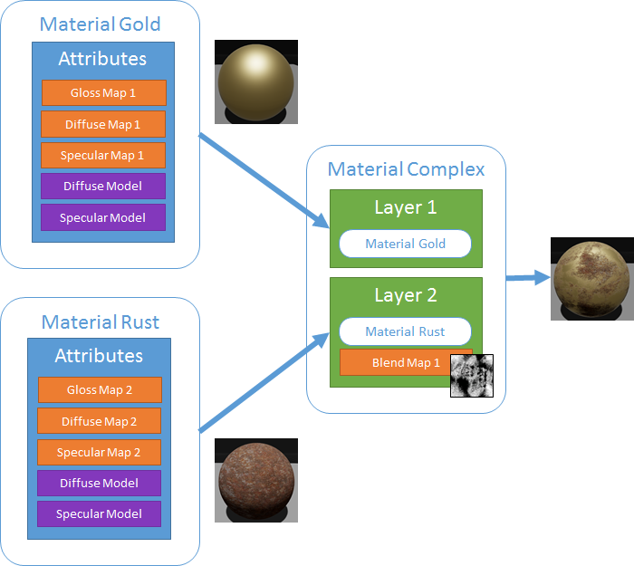
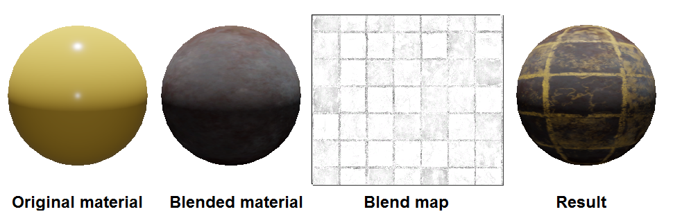
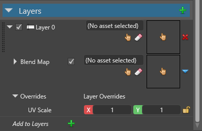
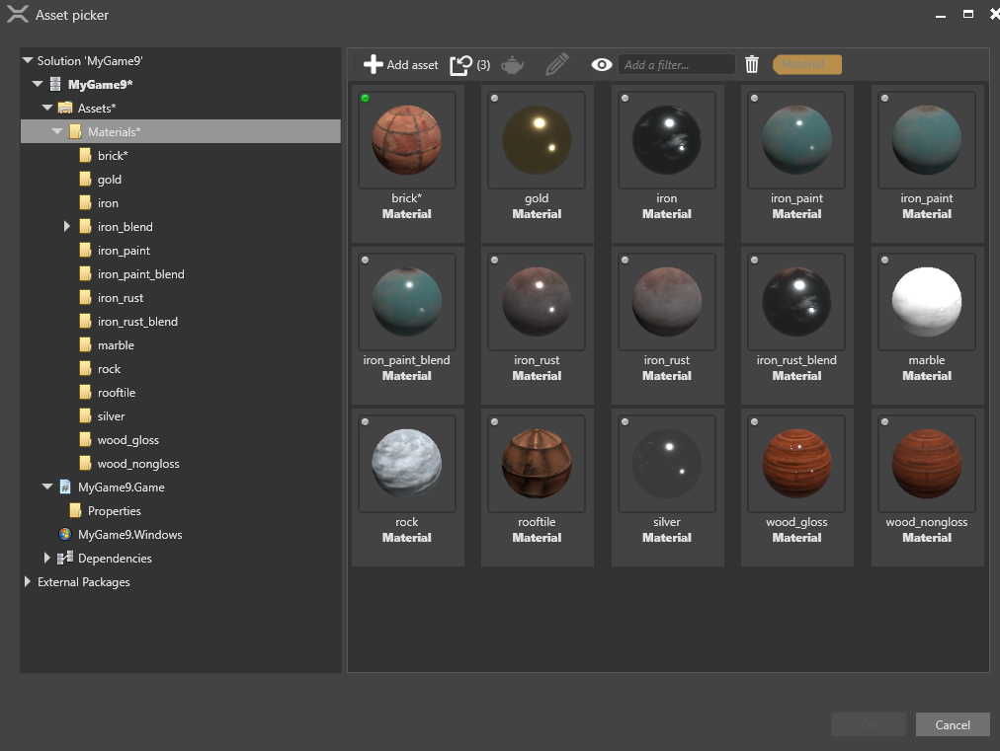
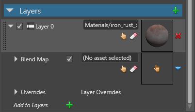
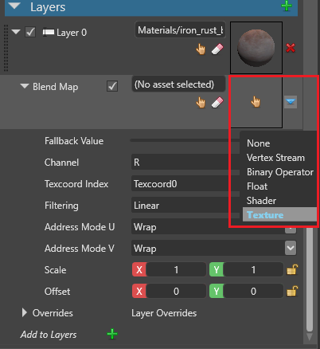

Material layers
Intermediate Artist Programmer
You can combine layers of materials to build more complex materials. For example, this screenshot shows the blending of a rust material (left) with a gold material (right):

This diagram shows the definition of the materials blended in the screenshot above:

Blend maps
Blend maps are material maps that determine how Game Studio blends layers. For example, you can use a texture as a blend map:


Note how the blend map texture corresponds to the patterning on the result.
Blend maps work the same way as any other kind of material map. For more information, see Material maps.
Shading models
Stride blends materials differently depending on whether their shading models (eg diffuse models, specular models, etc) are different.
If you blend materials that have identical shading models, Stride collects the attributes of the materials, then applies the shading models to all of them. This saves GPU.
If the materials have different shading models, Stride applies each material's shading models to that material's attributes, then blends the results. This uses more GPU.
Add a layer
Select the material you want to add a layer to.
In the Property Grid (on the right by default), next to Layers, click
 (Add).
(Add).
Game Studio adds a layer to the material.

Next to the layer, click
 (Select an asset).
(Select an asset).The Select an asset window opens.

Specify a material you want to add as a layer and click OK.
Game Studio adds the material as a layer.

Next to Blend Map, click (Replace) and select the type of blend map you want to use to blend the layers. For more information about blend maps, see Material maps.

Game Studio blends the material layers using the blend map you specified. You can add as many layers as you need.
Layer properties
| Property | Description |
|---|---|
| Material | The material blended in this layer |
| Blend Map | The blend map used to blend this layer with the layer above |
| Layer Overrides | UV Scale: A UV scale applied to all textures UV of the material of the layer (excluding the occlusion map) |